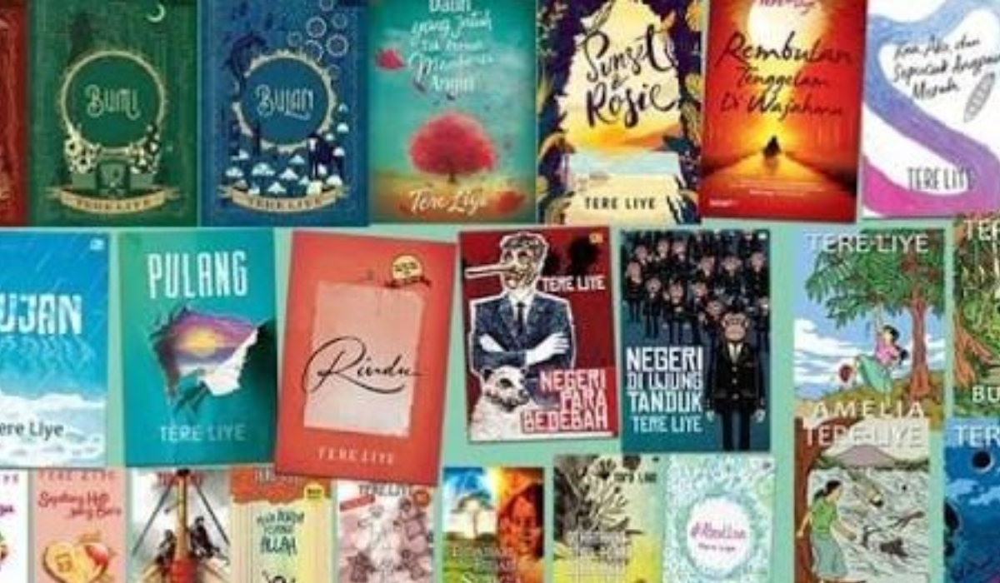

Manfaat Membaca Buku
Membaca buku adalah salah satu kebiasaan paling bermanfaat dan memperkaya yang bisa kita kembangkan. Baik itu fiksi, non-fiksi, atau puisi, buku memiliki kekuatan untuk membawa kita ke dunia yang berbeda, mengajarkan perspektif baru, dan menginspirasi kreativitas kita.
Luangkan waktu setiap hari untuk membaca, bahkan hanya beberapa menit. Pikiran Anda akan berterima kasih karenanya!
5 Rekomendasi Buku Terbaik
Ingin menambah daftar bacaan Anda? Berikut adalah lima buku rekomendasi yang sangat menarik:
- Laskar Pelangi - Andrea Hirata
- Bumi - Tere Liye
- Negeri 5 Menara - Ahmad Fuadi
- Hujan - Tere Liye
- Perahu Kertas - Dee Lestari
Buku-buku ini menawarkan wawasan yang tak lekang oleh waktu dan cerita yang tak terlupakan. Selamat membaca!